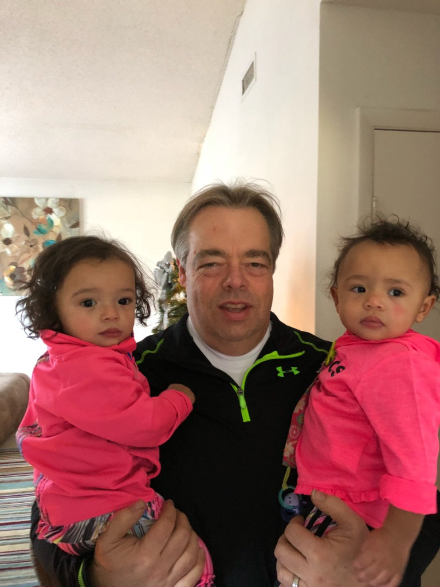

About Me
I am the Network Administrator for the Multistate Tax Commission. The Multistate Tax Commission is an intergovernmental state tax agency working on behalf of states and taxpayers to facilitate the equitable and efficient administration of state tax laws that apply to multistate and multinational enterprises. We have a geographically dispersed dispersed work force of tax auditors and legal staff. Our headquarters office in Washington DC houses our data center as well as 15 support staff. Our audit staff conducts sales and use as well as income tax audits on predominately Fortune 100 companies. Our legal staff provides amicus briefs to various state Supreme Courts as well as the Supreme Court of the United State. Some of the most noteworthy court decisions that our legal staff has provided briefs for are Gillette v. California Franchise Tax Board and most recently South Dakota v. Wayfair, Inc. It is my job to ensure that all members of the staff have a computer that is working properly and that provides secure access to the Commissions data center. I am taking this class to learn how to make changes to applications that we are currently running and to create new applications as the need for them arises.
That covers my 'work' life, now onto my personal life. I joined the Navy directly out of high school. I spent 16 years in the submarine service. I have spent 94 consecutive days under water. I have 2 daughters. One is 30 the other is 23. My oldest daughter has blessed me with three grand daughters. The oldest is 13 and the twins are 2. My youngest daughter just graduated from The College of William and Mary with a Masters in Business Analytics. She works for one of the big 5 accounting firms and is based in Alexandria. I enjoy meeting her for lunch (which I always end up paying for) to discuss her upcoming wedding in October. My hobbies are woodworking and cycling. I am looking forward to warmer weather so I can get back on my bike. The type of cycing that I do is called randonneuring. It is long distance, unsupported cycling. The longest that I have cycled in one day is 134 miles. This seems like a lot but it pales in comparison to the accomplishments of others that I ride with. Several members of our bike club have completed The Race Across America and last month one of the club members rode 405.82 miles in 24 hours at 24 hours of Sebring.